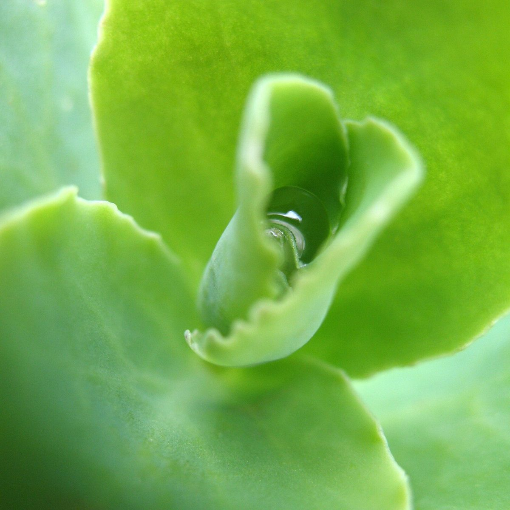

Imagine
行ってみたい声
お店に行ってみたい人が思い浮かべそうなひと言を、制作側が創作したものです。
以下は制作側が考えた創作のイメージ例で、実在のお客様の投稿ではありません。実際の口コミ・評価とは関係ありません。
いつか行ってみたいカフェです。まずはInstagramをのぞいてみようと思います。
Instagramの投稿をゆっくり見てみたいです。出かける日を決めるのは、そのあとにしようと思います。
「cafe HIPS」という名前が気になります。いつか足を運んでみたいと思っています。
